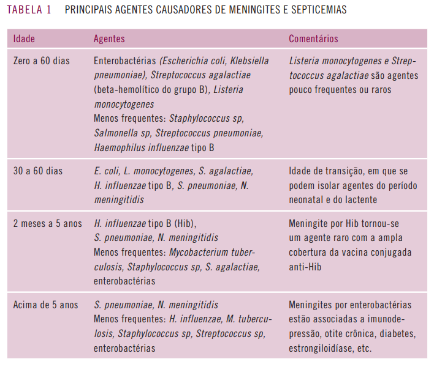

São processos infecciosos agudos que afetam as meninges, provocam reação purulenta detectável no líquido cefalorraquidiano (LCR). Pode envolver o encéfalo e/ou a medula espinal. É mais comum entre os 3º mês e o 3º anos de vida.
Os principais são Neisseria meningitidis, Streptococcus pneumoniae e Haemophilus Influenzae tipo B. Dentre os lactentes menores de 2 meses de vida, encontram-se as enterobactérias, principalmente Escherichia coli e Klebsiella sp e o estreptococo beta-hemolítigo do grupo B.
O tratamento com antibiótico deve ser o mais precoce possível e que qualquer retardo no tratamento inicial pode comprometer o prognóstico. Empiricamente deve-se levar em consideração a prevalência dos germes e a resistência bacterianalocal e recente.
Se < 3 meses, os principais patógenos são o Streptococcus do grupo B, Listeria monocytogenes, E. coli, S. pneumoniae :
Se 3 meses até 5 anos, os principais patógenos são Neisseria meningitidis, S. pneumoniae, H. influenzae tipo B:
> 5 anos, os principais agentes são Neisseria meningitidis, S. pneumoniae :
Devem ser feitos em razão da alta frquência de choque, deve-se manter as vias aéreas pérvias, fornecer oxigênio e garantir a estabilidade hemodinâmica e eletrolítica. Deve ser feito monitoramento de sinais vitais, nível de consciência, diurese e avaliação neurológica sequencial nas primeiras 48 horas de evolução.
A reposição hídrica e de eletrólitos é feita segundo necessidades basais, de acordo com a regra de Holliday e Segar. A reposição volêmica inicial pode ser feita em acesso venoso periférico calibroso com solução salina a 0,9%, 20 mL/kg em bolo, repetindo, se necessário até 60mL/kg na primeira hora, objetivando diurese de > 1mL/kg/h, normalização da PA, pulsos, nível de consciência e tempo de enchimento capilar adequados.
Após 60mL/kg sem melhora, considerar uso de coloide (albumina humana a 5%, 20mL/kg). Se necessário mais volume, deve-se considerar associar droga vasoativa, inicialmente dopamina (5 a 20 mcg/kg/min).